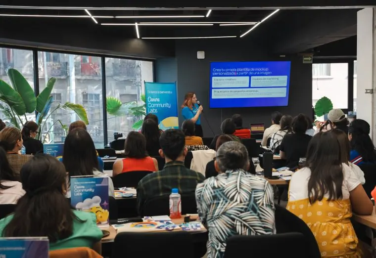

Jun252026
Register
Fairground Park is getting a refresh. See what your neighbors have suggested — for play, the lake, sports, shade and events — react to the ideas you like, and add your own.
The most-supported ideas move on to the design phase. There are a couple of other ways to get involved too, but the ideas board is where it's happening right now.
A short survey on how easy the park is to get around. Open all summer · 5 minutes.
Take the survey